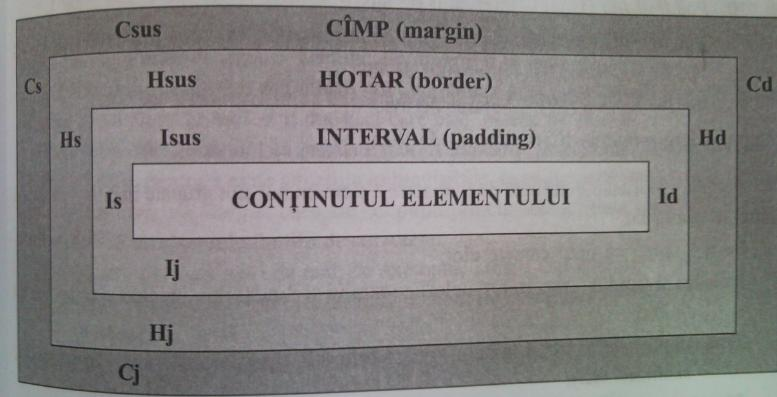
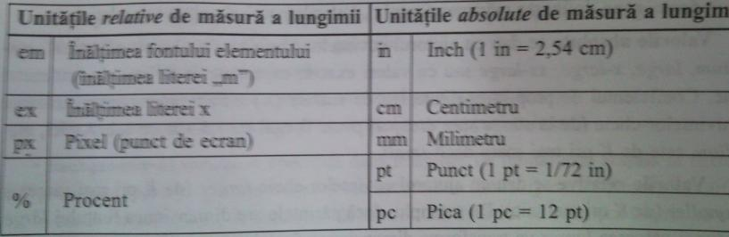
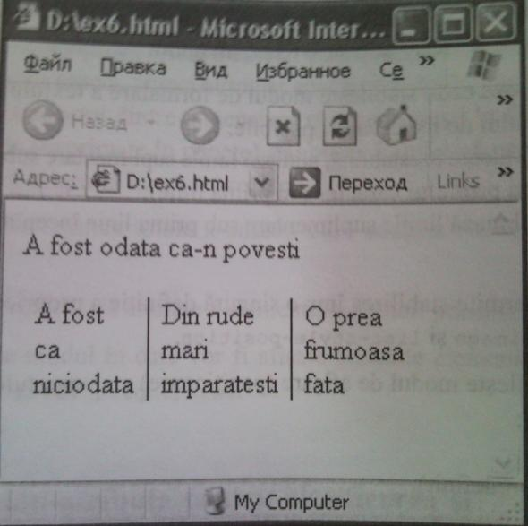
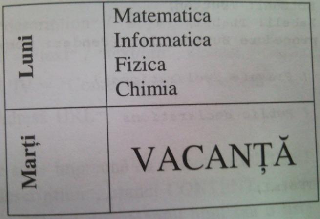
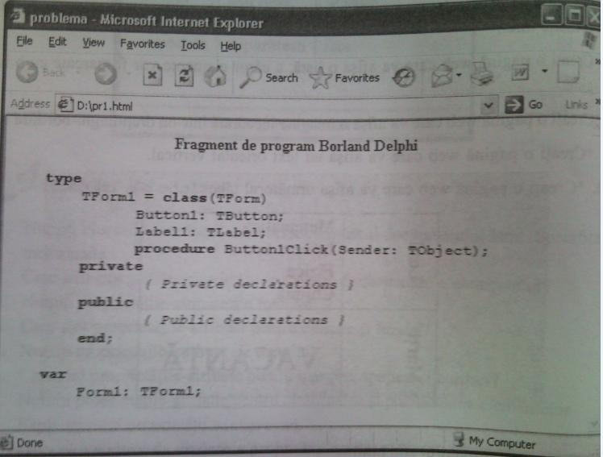

Atributele stilurilor (proprietăţi pentru formatare)
11.1. Modelul formatării
Din punct de vedere al formatării fiecare element al documentului html este încadrat în cîteva blocuri-dreptunghiuri:

Sintaxa CSS permite stabilirea dimensiunilor şi a culorii fiecărui dintre blocurile elementului.
Cîmpul este întotdeuna transparent şi moşteneşte culoarea părintelui elementului.
De exemplu, părintele paragrafului este elementul body.
Culoarea de fundal a intervalului coincide cu culoarea de fundal a elementului. Fiecare element are proprietatea-atribut Display cu următoarele valori posibile:
S "none" (elementul nu va fi afişat);
S "block" (elementul este de tip bloc);
S "list-item" (elementul este de tip listă);
S "inline" (elementul este de tip inline, adică înglobat în linie).
Pentru gestionarea blocurilor se utilizează următoarele proprietăţi-atribute:
1. Margin-left (Cs) - cîmpul stîng;
2. Border-left (Hs) - hotarul stîng;
-Secţia J J
3. Paddind-left (Is) - intervalul stîng;
4. Width - lăţimea elementului (a blocului interior, valoarea implicită este auto);
5. Padding-right (Id) - intervalul stîng;
6. Border-right (Hd) - hotarul drept;
7. Margin-right (Cd) - cîmpul drept;
(Valorile acestor proprietăţi sînt exprimate în pixeli şi suma lor este egală cu lăţimea elementului-părinte sau cu lăţimea ferestrei browser-ului, dacă elementul nu este inclus în altul.)
8. Margin-top (Csus) - cîmpul de sus;
9. Border-top (Hsus) - hotarul de sus;
10. Paddind-top (Isus) - intervalul de sus;
11. Height - înălţimea elementului (a blocului interior, valoarea implicită este auto);
12. Padding-bottom (Ij) - intervalul de jos;
13. Border-bottom (Hj) - hotarul de jos;
14. Margin-bottom (Cj) - cîmpul de jos.
De fapt, proprietăţile-atribute de formatare a elementelor sînt grupate în cîteva categorii care se referă la:
Font - specifică tipul caracterelor;
Culoare şi fundal — precizează culorile textului şi fundalului, precum şi imaginea de fundal;
Text - stabileşte aspectul textului (nu se referă la tipul de caractere, dar la spaţiri, sublinieri etc.);
Margini, spaţieri şi borduri - specifică caracteristicile blocurilor-dreptunghiuri ale
elementelor;
Clasificarea şi poziţionarea elementelor - stabileşte comportarea generală a celorlalte elemente, incluzînd şi proprietăţi-atribute pentru liste.
Formatarea vizuală - precizează proprietăţile de afişare a blocurilor-dreptunghiuri ale elementelor.
Pentru stabilirea valorilor proprietăţilor care exprimă distanţe (lungimi) se folosesc unităţi absolute de rtiăsură a lungimii şi unităţi relative de măsură a lungimii.
Unităţile relative de măsură a lungimii definesc lungimi relativ de alte proprietăţi, care exprimă lungimi. Documentele html, care utilizează aceste unităţi mai puţin depind de dispozitivul de afişare a lor (monitoare de diferite tipuri, printere etc.)
Unităţile absolute de măsură a lungimii definesc lungimi exacte şi se folosesc atunci cînd se cunoaşte din timp dispozitivul de afişare a lor.

11.2. Proprietăţi-atribute ale fontului
• font-famiiy stabileşte familia de fonturi (eventual fontul) sau lista familiilor de fonturi. Aşa cum un calculator poate să nu aibă instalat un font, de regulă, se optează pentru lista familiilor de fonturi. Denumirile fonturilor se delimitează prin virgule. Dacă numele fontului este format din cîteva cuvinte, atunci el se încadrează între ghilimele. Browser-ul va alege primul font din listă care este instalat pe calculator.
Majoritatea calculatoarelor au instalate fonturi standard (de exemplu, Times, Helvetica, Courier). Totuşi, pentru a evita situaţiile imprevizibile, se recomandă includerea în listă a unui nume generic de familie, care are cel puţin principalele atribute solicitate. Sintaxa CSS utilizează următoarele familii de caractere:
şerif ('pentru porţiuni mari de text; de exemplu, Times, Garamond);
sans-serif (pentru titluri sau blocuri mici de text; de exemplu, Helvetica, Arial, Avant Garde);
cursive (fonturi de manuscris, adică scrise cu mîna; de exemplu, Zapf-Chancery, Parc Avenue);
fantasv (pentru titluri stilate; de exemplu, Western, Blippo, Hobo, Broadway);
monospace (fonturi ca la maşina de scris, fiecare literă ocupînd acelaşi spaţiu; de exemplu, Courier).
Astfel, la sfîrştul listei de fonturi se va ataşa un nume generic de familie din lista prezentată, ca în următorul exemplu:
<BODY> {font- f arai ly: "Times New Roman" , Garamond, şerif}
• font-style precizează stilul fontului. Valori posibile: normal, italic, oblique. Varianta bold nu există, fiind inclusă în proprietatea font-weight.
• font-variant specifică dacă textul va fi afişat (pentru valoarea small-caps) cu minuscule sau nu (pentru valoare normal).
• font-weight stabileşte grosimea caracterelor. Valori posibile: normal, bold, 100, 200, 300, 400, 500 (echivalent cu normal), 600, 700 (echivalent cu bold), 800, 900, bolder (este cu 100 mai mare decît grosimea curentă), lighter (este cu 100 mai mică decît grosimea curentă),
• font-size defineşte mărimea fontului. Valorile pot fi absolute sau relative.
Valorile absolute se dau cu ajutorul cuvintelor-cheie xx-small, x-small, small, me-
dium, large, x-large, xx-large sau cu valori exacte, exprimate în milimetri, centimetri etc. Coeficientul de proporţionalitate sau de scalare (K) a mărimilor corespunzătoare cuvintelor-cheie (de la stînga spre dreapta) poate fi egal cu 1,5 sau cu 1,2. Astfel, me- dium este de K ori mai mare decît small.
Valorile relative se dau cu ajutorul cuvintelor-cheie larger (de K ori mai mare) şi smaller (de K ori mai mic). De exemplu, dacă părintele are dimensiunea fontului large, atunci valoarea laiger va transforma dimensiunea fontului curent în x-large.
Valorile absolute se pot da şi cu ajutorul procentelor sau a unităţilor em, ex, px.
• Font permite stabilirea într-o singură definiţie a valorilor pentru proprietăţile font- style, font-variant, font-weight, font-size, line-height, font-family (în această ordine). Valorile primelor trei proprietăţi nu sint obligatorii (implicit fiind normal). Celelalte valori se delimitează prin spaţii cu excepţia valorii proprietăţii line-height (defineşte înălţimea rîndului de caractere), care se delimitează de valoarea font-size prin simbo¬lul /. Evident, valorile proprietăţii font-family se delimitează prin virgule.
• @font-face precizează familia de fonturi şi adresa familiei în cazul în care calculatorul nu are instalat nici unul din fonturile familiei. Exemplu:
@font-face {font-family: Arial; src: uri(http://server.com/Arial.eot)}
11.3. Proprietăţi-atribute pentru culoare şi fundal
• color stabileşte culoarea elementului text. în calitate de valori pot
fi cuvintele-cheie care definesc culorile (red, blue, cyan, green etc.) sau triplete de
forma rgb(n 1, n2, n3), unde «1, «2, «3 e {0, 1,..., 255}, precizînd respectiv cantitatea de roşu, verde, albastru.
• background-color stabileşte culoarea de fundal pentru un stil.
Valoarea transparent este implicită.
• background-image stabileşte imaginea de fundal pentru un stil.
Proprietatea background-image poate avea valoarea none, care corespunde unui fundal fără imagine. De exemplu, foaia de stiluri
<Style>
Body { background-image: uri (desen.jpg)}
P { background-image: none}
</Style>
defineşte imaginea fişierului desen.jpg drept fundal pentru document, însă paragrafele nu vor avea fundal.
• background-repeat se foloseşte atunci cînd se doreşte repetarea imaginii de fun¬dal (obţinerea efectului mozaic). Valori posibile:
repeat (mozaicare normală);
repeat-x (repetarea imaginii orizontal pe o singură linie);
repeat-y (repetarea imaginii vertical pe o singură coloană).
• background-attachment specifică dacă imaginea de fundal este ataşată la textul din
prim-plan (pentru valoarea scroll) sau ancorată în fundal (pentru valoarea f ixed).
In cazul valorii scroll la derularea documentului fundalul se va mişca împreună cu textul.
• background-position stabileşte punctul de pornire al imaginii. Implicit punctul de
pornire este situat în partea stîngă-sus a ecranului. Această valoare
poate avea una sau două valori. în cazul a două valori, prima specifică
poziţionarea pe orizontală, iar a doua - pe verticală. Valori posibile: left,
center, right (pentru plasarea orizontală), top, center, bottom (pentru plasarea verticală).
De asemenea, în calitate de valori pot fi procentele (0%, 0% fiind colţul stînga-sus
al ecranului, iar 100%, 100% - colţul dreapta- jos al ecranului) sau valori în inci sau centimetri.
• Background permite stabilirea într-o singură definiţie a proprietăţilor pentru
fundal (este similar atributului font). Ordinea este: background-color, background-image, background-repeat, background-attachement, background-position.
Observaţie
Dacă unele elemente html se conţin în altele, atunci, de regulă, primele moştenesc proprietăţile pentru aspect ale ultimelor. Astfel, dacă pentru eticheta <Body> a fost stabilită culoarea verde pentru text, atunci în mod implicit paragrafele, de asemenea vor avea culoarea verde.
Toate proprietăţile care stabilesc parametrii fundalului nu se moştenesc. Totuşi fundalul elementului-părinte în mod implicit se va afişa, deoarece valoarea predefinită a proprietăţii
backgound-color este transparent.
11.4. Proprietăţi-atribute pentru text
• word-spacing specifică intervalul (spaţierea) dintre cuvinte. Unitatea de măsură a intervalelor este em (1 em este spaţiul ocupat de litera „m”). Valorile 0 şi normai sînt echivalente şi corespund spaţierii implicite.
• letter-spacing stabileşte spaţierea dintre litere.
• text-decoration precizează ornamentări pentru text. Valori posibile: none, underline, overline, line-through, blink (se pot specifica cîteva).
• vertical-align specifică poziţionarea pe verticală a textului. Valori posibile:
- baseiine - aliniază linia de bază a stilului cu linia de bază a elementului-părinte;
- sub - stilul indicelui este definit ca şi indicele părintelui;
- super - stilul exponentului este definit ca şi exponentul părintelui;
- text-top — aliniază partea de sus a textului cu parte de sus a părintelui;
- text-bottom - aliniază partea de jos a textului cu partea de jos a părintelui;
- raiddie - aliniază punctul de jumătate a elementului pe verticală la linia de bază
a părintelui plus jumătate din înălţimea literei „x” a părintelui;
- top - aliniază partea de sus a elementului cu cel mai înalt element din linia curentă;
- bottom - aliniază partea de jos a elementului cu cel mai mic element din linia curentă;
- peroentage - ridică sau coboară elementul în dependenţă de linia de bază
a părintelui. Valori pot fi procente întregi pozitive sau negative.
• text-ident stabileşte deplasarea primului rind.
Valoarea acestei proprietăţi corespunde lungimii spaţiului lăsat.
• text-align stabileşte alinierea stînga-dreapta-centru.
Valori posibile: left, center, right, justify.
Alinierea are loc faţă de blocul care conţine elementul (nu faţă de fereastra browser-ului).
• line-height specifică distanţa dintre liniile de bază adiacente. în calitate de valoare poate fi un număr întreg (semnificînd factorul de multiplicare) sau un număr întreg de em (stabilind distanţa exactă).
• text-transform precizează dacă textul va fi scris cu litere majuscule sau minus¬cule. Valori posibile: none, capitalize (prima literă a fiecărui cuvînt va fi majusculă), uppercase (toate literele vor fi majuscule), îowercase (toate literele vor fi minuscule).
11.5. Proprietăţi-atribute pentru margini, spaţieri şi borduri
• margin-top stabileşte spaţiul dintre cîmpul de sus Csus (vezi modelul formatării de la
începutul acestei lecţii) al elementului şi elementul alăturat de sus.
• margin-bottom stabileşte spaţiul dintre cîmpul de jos Cj al elementului şi elementul alăturat de jos.
• margin-right stabileşte spaţiul dintre cîmpul drept Cd al elementului şi elementul alăturat din dreapta.
• margin-ieft stabileşte spaţiul dintre cîmpul stîng Cs al elementului şi elementul alăturat din
stîngă.
• margin permite stabilirea într-o singură
definiţie a celor patru proprietăţi precedente în ordinea: sus, dreapta, jos, stînga.
• padding-top stabileşte intervalul de sus Isus (vezi modelul formatării de la începutul acestei lecţii).
• padding-bottom stabileşte intervalul de jos Ij (vezi modelul formatării de la începutul acestei lecţii).
• padding-right stabileşte intervalul drept Id (vezi modelul formatării de la începutul acestei lecţii).
• padding-lef t stabileşte intervalul stîng Is (vezi modelul formatării de la începutul acestei lecţii).
• padding permite stabilirea intr-o singură definiţie a celor patru proprietăţi precedente în ordinea:
sus, dreapta, jos, stînga.
• border-top stabileşte stilul şi culoarea hotarului de
sus Hsus (vezi modelul formatării de la începutul acestei lecţii).
Valori posibile pentru stil: none, dotted, dashed, solid, double, groove, ridge, inset, outset.
Culoarea se defineşte printr-un cuvînt-cheie. Exemplu:
P (border-top: outset, green)
• border-bottora stabileşte stilul şi culoarea hotarului de jos Hj (vezi modelul formatării de la începutul acestei lecţii).
• border-right stabileşte stilul şi culoarea hotarului drept Hd (vezi modelul formatării de la începutul acestei lecţii).
• border-lef t stabileşte stilul şi culoarea hotarului stîng Hs (vezi modelul formatării de la începutul acestei lecţii).
• border-top-width defineşte o bordură fizică pentru hotarul de sus Hsus (vezi modelul formatării de la începutul acestei lecţii). Valori posibile: thin (subţire), medium, thick (gros), valori întregi de em sau puncte (pt),
• border-bottcm-width defineşte o bordură fizică pentru hotarul de jos Hj (vezi modelul formatării de la începutul acestei lecţii).
• border-right-width defineşte o bordură fizică pentru hotarul drept Hd (vezi modelul formatării de la începutul acestei lecţii).
• border-ief t-width defineşte o bordură fizică pentru hotarul stîng Hs (vezi modelul formatării de la începutul acestei lecţii).
• border-width permite stabilirea într-o singură definiţie a celor patru proprietăţi precedente în ordinea: sus, dreapta, jos, stînga.
• border-color defineşte culoarea celor patru borduri.
• border-styie stabileşte stilul celor patru borduri ale elementului. Valori posibile:
none, dotted, dashed, solid, double, groove, ridge, inset, outset.
• border permite stabilirea într-o singură definiţie a proprietăţilor hotarului.
• height stabileşte înălţimea totală a casetei care conţine elementul.
Dacă elementul este text şi nu încape în casetă, atunci automat apar barele de defilare.
în cazul imaginii, aceasta este scalată (raportul dintre dimensiuni rămîne acelaşi)
la dimensiunile casetei. Valorile pot fi exacte (exprimate în puncte) sau poate fi utilizată
constanta auto pentru a încredinţa alocarea spaţiului necesar browser-ului.
• width stabileşte lăţimea totală a casetei care conţine elementul. Este similară proprietăţii height.
• fioat stabileşte modul de aliniere a elementului. Valori posibile: left, right, none.
• ciear defineşte modul în care vor fi afişate celelalte elemente faţă de elementul curent. Valori posibile: left,
right, none.
11.6. Proprietăţi-atribute pentru clasificarea şi poziţionarea elementelor
• dispiay stabileşte modul de folosire a unui element de stil. Valori posibile:
- inline (creează o casetă pe aceeaşi linie cu elementele de text alăturate, fiind
formatată în dependenţă de cantitatea de conţinut dintre marginile sale);
- biock (creează o casetă în dependenţă de elementele înconjurătoare);
- list-item (creează o casetă în dependenţă de elementele înconjurătoare,
în plus sînt adăugate marcatoare de articole din listă);
- none (stopează afişarea elementului).
• white-space specifică modul de tratare a spaţiilor şi a întreruperilor de linie. Valori posibile:
- normal (cîteva spaţii consecutive sint afişate ca un singur spaţiu);
- pre (efect similar textului preformatat);
- nowrap (liniile vor fi întrerupte doar cu eticheta <br>).
• list-styie-type stabileşte modul de marcare (adică imaginea marcatorului) a elementelor unei liste. Valori posibile:
- disc;
- circle;
- square;
- decimai;
- lower-roman (cifre romane mici);
- upper-roman (cifre romane mari);
- lower-alpha (litere mici);
- upper-alpha (litere mari);
* none.
• list-styie-image specifică o imagine în calitate de marcator de element al listei, în calitate de valoare se sene adresa URL a imaginii.
• list-styie-position stabileşte modul de formatare a textului care urmează după marcatorul elementului de listă. Valori posibile:
- outside (valoare prestabilită, aliniază liniile suplimentare sub prima linie începînd cu coloana primului caracter din prima linie);
- ins ide (aliniază liniile suplimentare sub prima linie începînd cu coloana marca¬torului).
• îist-styie permite stabilirea într-o singură definiţie a proprietăţilor îist-style- type, list-style-image şi Xist-style-position.
• position stabileşte modul de afişare (poziţionare) a elementului. Valori posibile:
- relative;
- absolute;
- static (predefmit).
Exemplul 1
<HTML>
<Head>
<Style>
P.liniat {
border-style: solid; border-right-width: lpt; border-left-width: Opt; border-top-width: Opt; border-bottom-width: Opt; width: 5Opt; display: inline; padding-left: 5pt; padding-right: 5pt;
}
P.rind
{
display: inline; width: 5Opt; padding-left: 5pt;
}
</Style>
</Head>
<Body>
<P> A fost odata ca-n povesti </P>
<P class=liniat> A fost ca niciodata </p>
<P class=liniat> Din rude mari imparatesti </P>
<P class=rind> O prea frumoasa fata </P>
</body>
</HTML>

Întrebări de control
1. Numiţi blocurile care încadrează orice element al documentului html. Specificaţi incluziunile.
2. Care sînt categoriile proprietăţilor-atribute de formatare a elementelor?
3. Numiţi proprietăţile-atribute ale fontului.
4. Care sînt proprietăţile-atribute pentru culoare şi fundal?
5. Numiţi proprietăţile-atribute ale textului.
6. Care sînt proprietăţile-atribute pentru margini, spaţieri şi borduri?
7. Numiţi proprietăţile-atribute pentru clasificarea şi poziţionarea elementelor.
8. Explicaţi rolul proprietăţii Background.
9. Care este sintaxa de apelare a proprietăţii padding?
10. Care este sintaxa de apelare a proprietăţii list-style?
11. Pentru ce se utilizează proprietatea margin?
Satcini pentzu lucru independent
1. Creaţi o pagină web care va afişa un text aliniat din stîngă şi din dreapta.
2. Fără a utiliza eticheta <Table>, creaţi o pagină web care va afişa un text încadrat într-un dreptunghi.
3. Fără a utiliza eticheta <Table>, creaţi o pagină web care va afişa un text în trei coloane.
4. Creaţi o pagină web care va afişa un text cu patru rînduri astfel:
primul rind va avea fontul Arial, stilul italic; al doilea - fontul Times New Roman, stilul bold; al treilea - fontul Helvetica, stilul normal; al patrulea - fontul Courier, subliniat.
5. Creaţi o pagină web care va afişa un text cu şase rînduri, astfel încît mărimea literelor fiecărui rînd următor să crească proporţional. Indicaţie. Folosiţi atributul font-size şi cuvintele-cheie medium, large, x-small, xx-small, x-large, xx-large, small.
6. Creaţi o pagină web care va afişa o listă, a căror elemente vor fi marcate cu litere romane mici.
7. Creaţi o pagină web care va afişa o listă, a căror elemente vor fi marcate cu o ima¬gine.
8. Creaţi o pagină web care va afişa o imagine încadrată într-un dreptunghi-bord ură roşu.
9. Creaţi o pagină web care va afişa un text orientat vertical.
10. Creaţi o pagină web care va afişa următorul tabel:

11. Comentaţi următorul cod html.
<HTML>
<Head>
<Style>
A:link {border-style: outset; width=250; background-color: red;
color: white; margin=2;}
A:visited {border-style: outset; width=250;background-color: red;
color: white; margin=2;}
A:hover {font-size: 16pt; border-style: inset; width=250;
background-color: red; color: white;margin=2;>
</Style>
<H2> Programele analitice ale cursurilor opţionale </H2>
</Head>
<Body style="font-size: 12pt; background-color: gray; text-align: center;
vertical-align: center,-" >
<A href="col,html"> Limbajul JavaScript</A><br>
<A href="co2.html"> Foi de stiluri in cascada</A><br>
<A href="co3 ,html"> Limbajul PHP</Axbr>
<A href="co4 . httnl"> Serverul MySQL</A>
</Body>
</HTML>
12. Creaţi o pagină web care va afişa următoarea pagină web
Indicaţie. Textul este scris cu fontul Courier New.
